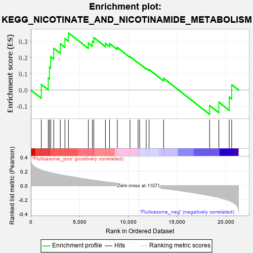
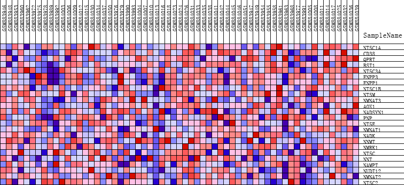
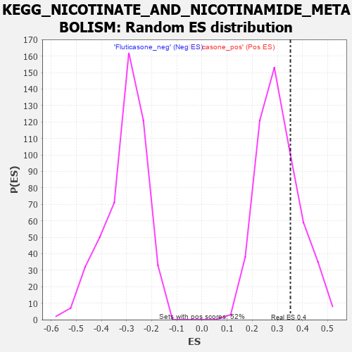

| | | Dataset | GSEA_expr_Flu.GSEA_timepoint.cls#Fluticasone |
| Phenotype | GSEA_timepoint.cls#Fluticasone |
| Upregulated in class | Fluticasone_pos |
| GeneSet | KEGG_NICOTINATE_AND_NICOTINAMIDE_METABOLISM |
| Enrichment Score (ES) | 0.35181335 |
| Normalized Enrichment Score (NES) | 1.1553333 |
| Nominal p-value | 0.2662835 |
| FDR q-value | 1.0 |
| FWER p-Value | 0.957 |
Table: GSEA Results Summary

Fig 1: Enrichment plot: KEGG_NICOTINATE_AND_NICOTINAMIDE_METABOLISM
Profile of the Running ES Score & Positions of GeneSet Members on the Rank Ordered List
| PROBE | DESCRIPTION
(from dataset) | GENE SYMBOL | GENE_TITLE | RANK IN GENE LIST | RANK METRIC SCORE | RUNNING ES | CORE ENRICHMENT | | 1 | NT5C1A | NA | | | 1071 | 0.220 | 0.0349 | Yes |
| 2 | CD38 | NA | | | 1785 | 0.191 | 0.0751 | Yes |
| 3 | QPRT | NA | | | 1910 | 0.186 | 0.1411 | Yes |
| 4 | BST1 | NA | | | 2033 | 0.181 | 0.2055 | Yes |
| 5 | NT5C3A | NA | | | 2345 | 0.172 | 0.2574 | Yes |
| 6 | ENPP3 | NA | | | 3018 | 0.153 | 0.2850 | Yes |
| 7 | ENPP1 | NA | | | 3496 | 0.141 | 0.3173 | Yes |
| 8 | NT5C1B | NA | | | 3857 | 0.133 | 0.3518 | Yes |
| 9 | NT5M | NA | | | 5898 | 0.087 | 0.2895 | No |
| 10 | NMNAT3 | NA | | | 6314 | 0.078 | 0.3003 | No |
| 11 | AOX1 | NA | | | 6451 | 0.076 | 0.3233 | No |
| 12 | NADSYN1 | NA | | | 7649 | 0.054 | 0.2880 | No |
| 13 | PNP | NA | | | 8076 | 0.047 | 0.2861 | No |
| 14 | NT5E | NA | | | 8866 | 0.034 | 0.2622 | No |
| 15 | NMNAT1 | NA | | | 10168 | 0.013 | 0.2062 | No |
| 16 | NADK | NA | | | 11000 | 0.001 | 0.1676 | No |
| 17 | NNMT | NA | | | 11160 | -0.001 | 0.1606 | No |
| 18 | NMRK1 | NA | | | 11829 | -0.012 | 0.1338 | No |
| 19 | NT5C | NA | | | 12126 | -0.017 | 0.1263 | No |
| 20 | NNT | NA | | | 13620 | -0.042 | 0.0723 | No |
| 21 | NAMPT | NA | | | 18337 | -0.140 | -0.0949 | No |
| 22 | NUDT12 | NA | | | 19282 | -0.167 | -0.0745 | No |
| 23 | NMNAT2 | NA | | | 20349 | -0.212 | -0.0426 | No |
| 24 | NT5C2 | NA | | | 20602 | -0.226 | 0.0331 | No |
Table: GSEA details [plain text format]

Fig 2: KEGG_NICOTINATE_AND_NICOTINAMIDE_METABOLISM
Blue-Pink O' Gram in the Space of the Analyzed GeneSet

Fig 3: KEGG_NICOTINATE_AND_NICOTINAMIDE_METABOLISM: Random ES distribution
Gene set null distribution of ES for KEGG_NICOTINATE_AND_NICOTINAMIDE_METABOLISM